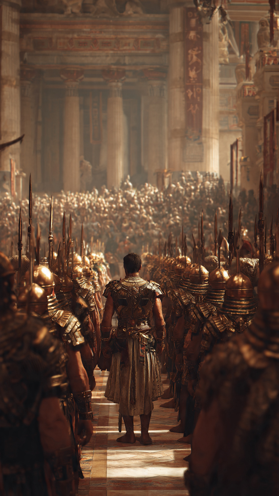
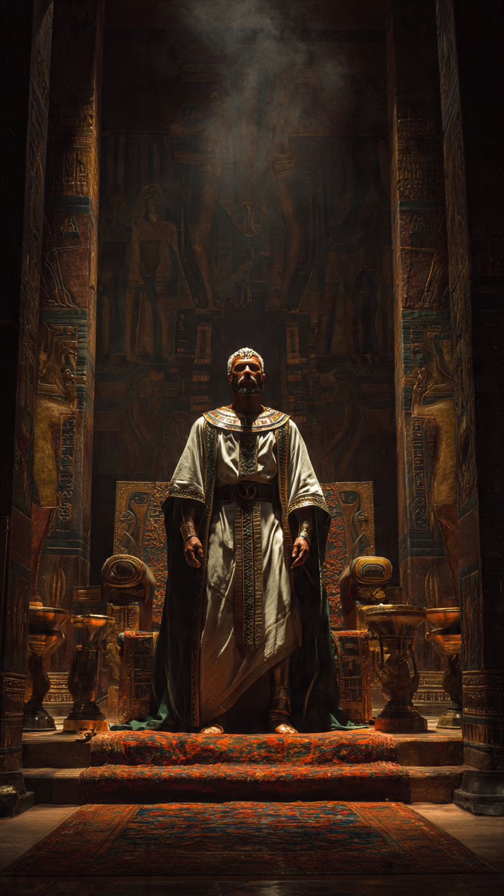

في زمن فرعون، عندما كان الظلم منتشرًا في أرض مصر، عاش رجل من قوم فرعون.
كان هذا الرجل يملك مكانة بين الناس، وكان قريبًا من مجلس الحكم، لكنه كان يخفي في قلبه إيمانًا عظيمًا بالله.
وقد ذكر الله قصته في القرآن الكريم في سورة غافر، فقال تعالى:
"وَقَالَ رَجُلٌ مُّؤْمِنٌ مِّنْ آلِ فِرْعَوْنَ يَكْتُمُ إِيمَانَهُ"
كان يعرف حقيقة فرعون، ويعلم أن القوة التي يملكها ليست دليلًا على أنه على حق.
فمهما بلغ الإنسان من ملك وسلطان، فهو عبد لله مثل غيره.
كان مؤمن آل فرعون يعيش في مكان مليء بالخوف.
فالناس كانوا يخشون مخالفة فرعون، لأن سلطته كانت كبيرة، وكان يعاقب من يعارضه.
لكن قلب هذا الرجل كان قويًا بالإيمان.
فقد كان يعلم أن رضا الله أهم من رضا البشر.
وعندما جاء موسى عليه السلام بدعوته إلى عبادة الله وحده، عرف هذا الرجل أن ما يقوله موسى هو الحق.
لكنه انتظر الوقت المناسب ليعلن موقفه.
كان يرى قومه يرفضون دعوة موسى، ويسمع الاتهامات التي يوجهونها إليه.
وكان يحزن لأنهم يرفضون الحق بسبب الخوف والكِبر.
وفي يوم من الأيام، وصل الأمر إلى لحظة خطيرة...
فقد قرر فرعون ومن حوله أن يؤذوا موسى عليه السلام.
وهنا لم يستطع الرجل المؤمن أن يبقى صامتًا.
تقدم بشجاعة، وبدأ يتحدث أمام الجميع...
وهو يعلم أن كلماته قد تغير حياته إلى الأبد.
📷 الصورة رقم 1

وقف مؤمن آل فرعون أمام قومه، ولم يعد يخفي ما في قلبه.
قال لهم بكلمات مليئة بالحكمة:
"يَا قَوْمِ إِنِّي أَخَافُ عَلَيْكُم مِّثْلَ يَوْمِ الْأَحْزَابِ"
كان يتحدث معهم برفق، فلم يهاجمهم ولم يطلب منهم إلا أن يفكروا بعقولهم.
ذكّرهم بما حدث للأمم السابقة التي كذبت رسلها، وكيف كانت نهاية الظالمين.
قال لهم:
"يا قوم، كيف تريدون قتل رجل يقول ربي الله؟ وقد جاءكم بالبينات من ربكم."
كان موقفه شجاعًا جدًا.
فقد كان يقف وحده تقريبًا أمام قوم يملكون القوة والسلطة.
حاول فرعون ومن حوله تجاهل كلامه، لكن كلماته وصلت إلى قلوب من كان لديهم استعداد لسماع الحق.
كان يعلم أن الإيمان ليس مجرد كلمة تُقال...
بل هو ثبات وقت الخوف، وصدق وقت الاختبار.
وفي تلك اللحظات ظهر الفرق بين من يعبد الله حقًا، ومن يخاف الناس أكثر من خوفه من الله.
لم يكن مؤمن آل فرعون يملك جيشًا أو منصبًا أقوى من فرعون...
لكنه كان يملك شيئًا أعظم:
قلبًا امتلأ باليقين.
استمر في نصح قومه، وحاول أن ينقذهم من الطريق الذي يسيرون فيه.
لكن كثيرًا منهم أصروا على العناد.
ومع اقتراب نهاية قصة فرعون، بقي موقف هذا الرجل شاهدًا على أن شخصًا واحدًا قد يقف مع الحق، حتى لو كان الجميع ضده.
📷 الصورة رقم 2

استمر مؤمن آل فرعون في الدفاع عن الحق، ولم يمنعه خوفه من فرعون من قول ما يؤمن به.
فقد أدرك أن حياة الإنسان قصيرة، وأن ما يبقى حقًا هو العمل الذي يرضي الله.
كان موقفه دليلًا على أن الإيمان الحقيقي يظهر في أصعب اللحظات.
فليس من الصعب أن يقول الإنسان كلمة طيبة عندما يكون آمنًا...
لكن الشجاعة الحقيقية أن يقول الحق عندما يكون الأمر صعبًا.
ومع مرور الأحداث، انتهى أمر فرعون وقومه، وأظهر الله الحق وأنقذ موسى عليه السلام ومن آمن معه.
أما مؤمن آل فرعون، فقد بقي اسمه في القرآن الكريم مثالًا للرجل الذي اختار الحق رغم أنه كان يعيش وسط الظلم.
لم يكن معروفًا بكثرة المال أو القوة أو الجيوش...
بل عُرف بإيمانه وشجاعته وحكمته.
تعلمنا قصته أن الإنسان يستطيع أن يكون مصدر خير حتى لو كان وحده.
فالله لا ينظر إلى عدد من يقفون مع الحق، بل ينظر إلى صدق القلوب.
وقد يكون شخص واحد بإيمانه وكلماته سببًا في تغيير قلوب كثيرة.
وهكذا بقي مؤمن آل فرعون مثالًا خالدًا لكل من يواجه الظلم:
أن الثبات على الحق يحتاج إلى قلب قوي، وأن الله ينصر من يصدق معه.
🏛️📖 انتهت القصة 📖🏛️
العبرة:
الإيمان الحقيقي يظهر وقت الشدة، والشجاعة ليست في القوة فقط، بل في قول الحق مهما كانت الظروف.